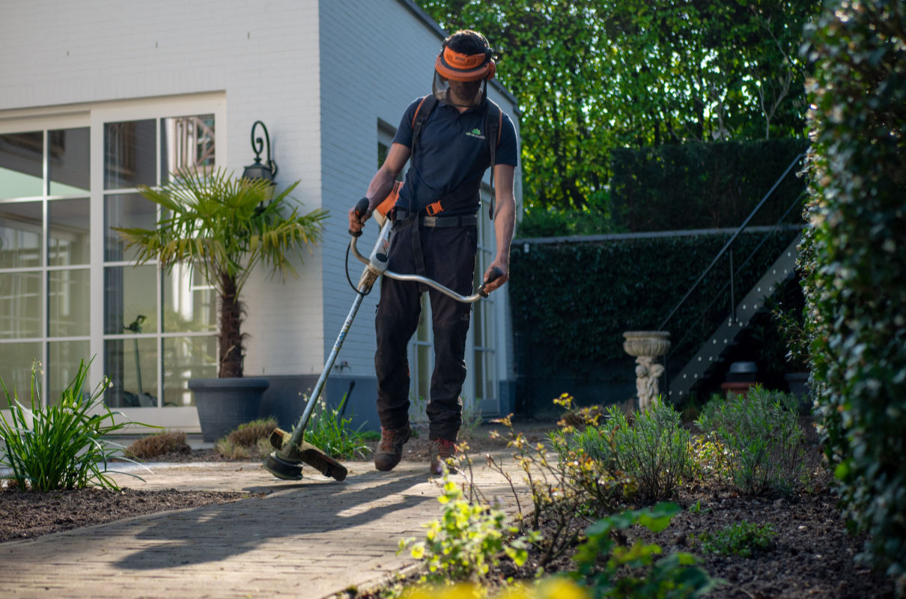

Unsere Hausbetreuungsdienstleistungen bestehen aus:
Wir betreuen Ihre Liegenschaft oder Ihr Wohnhaus zuverlässig und professionell. So können Sie sich sorgenfrei, wohl und sicher fühlen. Gerne erstellen wir für Sie ein auf Ihre Bedürfnisse zugeschnittenes Angebot für Hausbetreuung.
Wir bieten Ihnen folgende Dienstleistungen in der Hausbetreuung:

Wir sind die Profis für die technische Kontrolle. Wir werden Ihre technischen Anlagen einer gründlichen Kontrolle unterziehen. Unsere Mitarbeiter sind bestens ausgebildet und am aktuellsten Stand der Technik.
Wir sorgen dafür, dass in Ihrem Objekt zu jeder Zeit die volle Funktionsfähigkeit aller technischen Anlagen gegeben ist. Nach einer gründlichen Kontrolle sorgen wir dafür, dass nötige Arbeiten sofort durchgeführt werden.
24h Notruftelefon zur sofortigen Reaktion bei Störungen
Wir sind für Sie 24 Stunden am Tag und sieben Tage die Woche erreichbar und reagieren sofort bei jeglichem technischen Problem in Ihrer Wohnanlage.
Rufen Sie uns unter +43 676 672 74 72 an und teilen Sie uns Ihre Reinigungsanforderungen mit. Dann erstellen wir gerne ein individuelles Angebot nach Ihren Vorstellungen. Gerne können Sie uns auch eine Email schreiben unter office@profireiniger.at.
Wir sorgen für die fachgerechte Stiegenhausreinigung in Wien. Wo viele Menschen arbeiten oder als Besucher hin kommen, müssen Eingangsbereiche und Treppenhäuser schon allein durch die Nutzungsfrequenzen extremen Belastungen standhalten. Da hinterlassen nicht nur unterschiedliche Sohlen und Absätze ihre Farb- und Kratzspuren, auch Anlieferungen oder hausinterne Umzüge sorgen für unerfreuliche Schmutz- und Schleifspuren auf Böden und Wänden. Baustellen vor der Haustür oder Schlechtwetter kommen als weitere Faktoren hinzu. Ein Wischmopp allein verspricht dann jedoch nicht die optimale Treppenhausreinigung.
Neben Spezialgeräten für große Flurflächen oder endlose Treppenstufen haben nur die Fachleute die richtigen Pflegemittel zur Hand. Sie können auch den speziellen Bedürfnissen der unterschiedlichen Bodenflächen gerecht werden, wissen, wann eine Grundreinigung oder Versiegeln angesagt sind. Wir kennen unseren Bereich und können Ihnen so eine fachgerechte Treppenhausreinigung anbieten. Keime auf Handläufen und Geländern haben keine Chance dank regelmäßiger Reinigung mit passenden Desinfektionsmitteln - zumal für öffentliche Gebäude auch andere Hygienevorschriften berücksichtigt werden müssen. Wir raten Ihnen zudem: Was im Großen bei der Treppenhausreinigung gilt, trifft auch das Private zu.

Wir lassen Sie auch in diesem Winter nicht im Stich. Die kommende Saison läuft vom 15. Oktober 2022 bis zum 15. April 2023. Bereiten Sie sich jetzt schon vor. Zu unserem Winterdienst gehören die sorgfältige Schneeräumung und das Ausstreuen von Split sowie das Kehren und die Entsorgung des Streuguts.
Für bestimmte Objekte ist der Winterdienst gesetzlich vorgeschrieben, um die Sicherheit der Passanten zu gewährleisten und die Zugänglichkeit von Einrichtungen aufrechtzuerhalten.
Wir sind bereit, um Sie durch den nächsten Winter zu bringen. Wir sind für Sie 24-Stunden am Tag erreichbar und bieten Ihnen folgende Dienstleistungen:
Melden Sie sich bei uns für einen Besichtigungstermin unter office@profireiniger.at. Dann erstellen wir gerne für Sie ein Angebot über den Winterdienst abgestimmt auf Ihre Bedürfnisse und die Begebenheiten an Ihrem Standort.

Wir bieten umfassende Garagen- und Parkplatzreinigungsdienste, um sicherzustellen, dass Ihr Parkplatz Sicherheits- und Hygieneanforderungen erfüllt und einen guten ersten Eindruck hinterlässt.
Wir übernehmen einmalige Reinigungen sowie regelmäßige Inspektions-, Reinigungs- und Hochdruckreinigungsdienste. Unsere maßgeschneiderten Dienstleistungen sind darauf ausgelegt, dass Ihre Garagen und Parkplätze besonders sauber sind, indem wir uns auch um Aufzüge, Lobbys, Stiegenhäuser, Toiletten, Rampen und die Parkbuchten kümmern.
Unsere Garagen- und Parkplatzreinigung richtet sich vielfältige Bedürfnisse und Kunden, z.B. Reinigung von Parkplätzen in Einkaufszentren, die Reinigung von Tiefgaragen in Geschäftsgebäuden, die Reinigung von Parkplätzen in Wohnhäusern und die Reinigung von Parkplätzen in Bürogebäude.
Wir besichtigen gerne Ihr Objekt und erstellen ein individuelles Angebot ganz nach Ihren Bedürfnissen. Schreiben Sie uns unter office@profireiniger.at.
Wir betreuen Ihre Grünflächen. Wir sorgen dafür, dass Ihr Garten gepflegt und wunderschön anzusehen ist. Dazu bedarf viel Liebe und Erfahrung. Wir von Profireiniger Estera GmbH haben den grünen Daumen, um Ihre Grünflächen in Schuss zu halten.
So pflegen wir Ihre Grünflächen und Gärten:
...und vieles andere mehr ganz nach Ihren Wünschen und Bedürfnissen.

"Man muß einem Haus die Freude ansehen, mit der es gebaut
wurde."
- Brigitte Fuchs, Schweizer Autorin, Lyrikerin,
Sprachspielerin